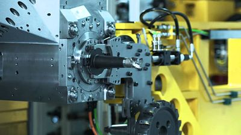
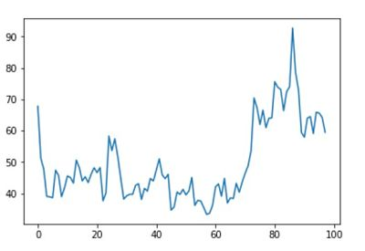

Increasing output and avoiding costly breakdowns
Our client was having trouble milling metal components for their product due to the inconsistency of the metal and the variety of components they were milling. The condition of the milling machine's blades were impossible for the operators to know while the machine was milling.Simultaneously operating the machine with spent blades could result in costly breakdowns of the milling machine or the component.
To avoid breakdowns the operators would listen to the machine and stop it when necessary to feel the condition of the blades. These manual checks of course decreased the output of the machine. If the operators had accurate and real-time information on the condition of the blades, they could plan their milling jobs better to increase throughput as well as avoid major breakdowns.
The milling machine with a blade attached.
We were tasked with creating a system, which monitored the condition of the blades and sent an early warning to the operators. A vibration sensor and labelled breakdowns recorded by machine operators were used to test a proof of concept. The proof of concept was able to predict breakdowns with good accuracy, so the client assigned us to build an AI Tool with added features.
We were to add an active learning component, where the operators could add future breakdowns at the press of a button which would be fed automatically into our algorithm as labelled data. This way the predictive maintenance system gets smarter over time wihout extra work or cost.
Time on the x-axis and distance on the y-axis. This graph illustrates how the distance between sequences grows as the condition of the blades worsens. After 70 seconds the operator is alerted.
A machine vibrates differently when it it running normally to when there is something wrong with it. The predictive maintenance system works by measuring a distance between the current sequence and a normal sequence (no breakdown) for a particular blade. By using the distance between the current sequence and normal sequence wewere able to create an early warning system. As the distance increases, so does the probability of a breakdown. Testing of the predictive maintenance will begin shortly.